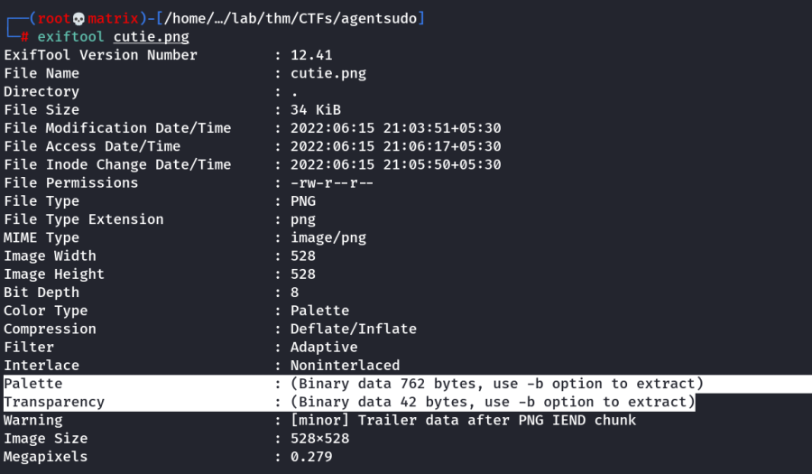
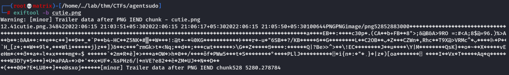

EXIF
EXIF stands for Exchangeable Image File Format; it is a standard for saving metadata to image files. Whenever you take a photo with your smartphone or with your digital camera, plenty of information gets embedded in the image. The following are examples of metadata that can be found in the original digital images:
• Camera model / Smartphone model
• Date and time of image capture
• Photo settings such as focal length, aperture, shutter speed, and ISO settings
Because smartphones are equipped with a GPS sensor, finding GPS coordinates embedded in the image is highly probable. The GPS coordinates, i.e., latitude and longitude, would generally show the place where the photo was taken.
One of the tools to view this data is exiftool.
exiftool
ExifTool is a platform-independent Perl library plus a command-line application for reading, writing and editing meta information in a wide variety of files. ExifTool supports many different metadata formats including EXIF, GPS, IPTC, XMP, JFIF, GeoTIFF, ICC Profile, Photoshop IRB, FlashPix, AFCP and ID3, Lyrics3, as well as the maker notes of many digital cameras by Canon, Casio, DJI, FLIR, FujiFilm, GE, GoPro, HP, JVC/Victor, Kodak, Leaf, Minolta/Konica-Minolta, Motorola, Nikon, Nintendo, Olympus/Epson, Panasonic/Leica, Pentax/Asahi, Phase One, Reconyx, Ricoh, Samsung, Sanyo, Sigma/Foveon and Sony.
Installation
apt install exiftool

Lets use -b option

We got binary code.
Read Documentation to properly use the tool